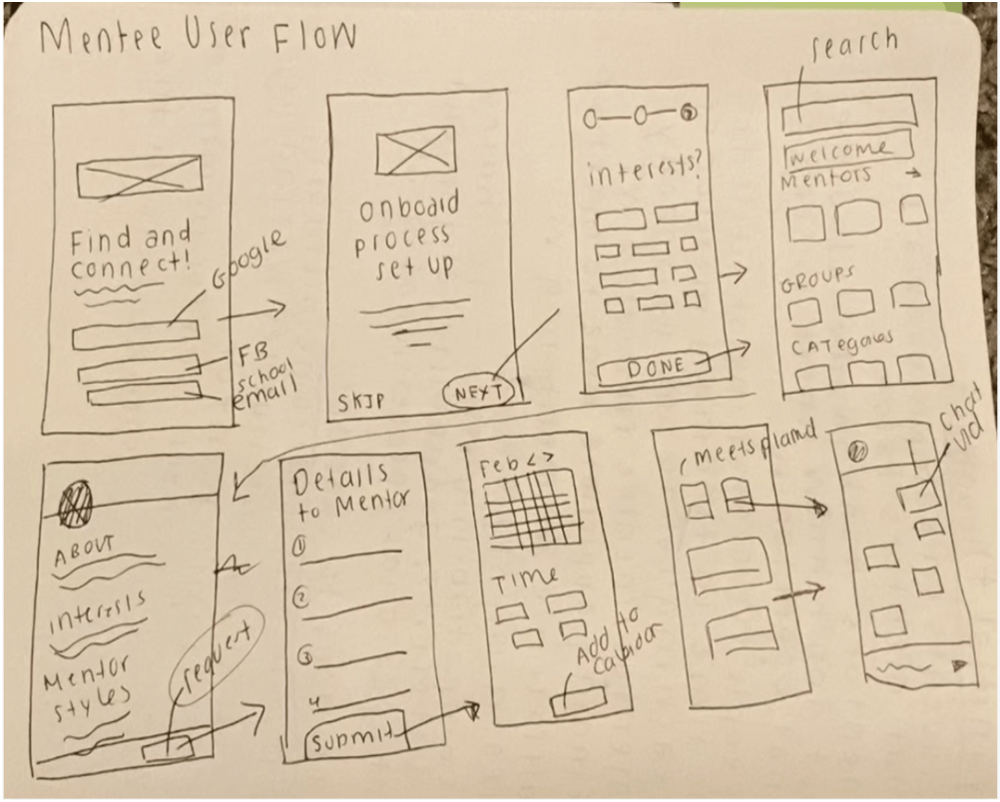
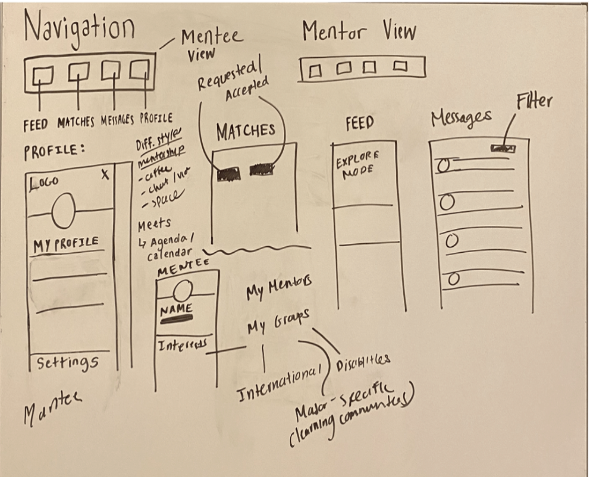
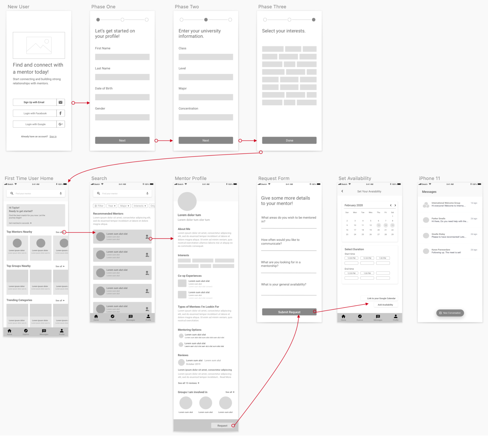
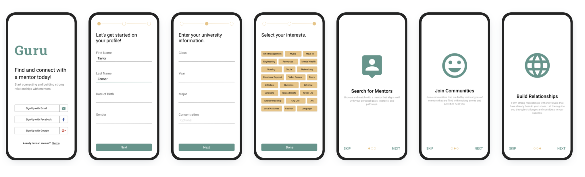
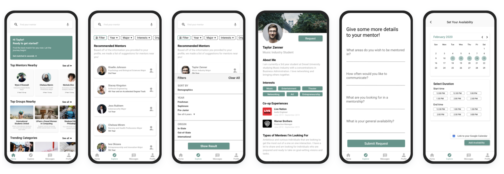
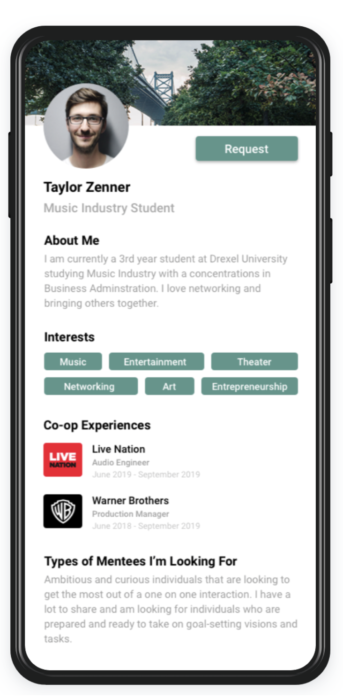
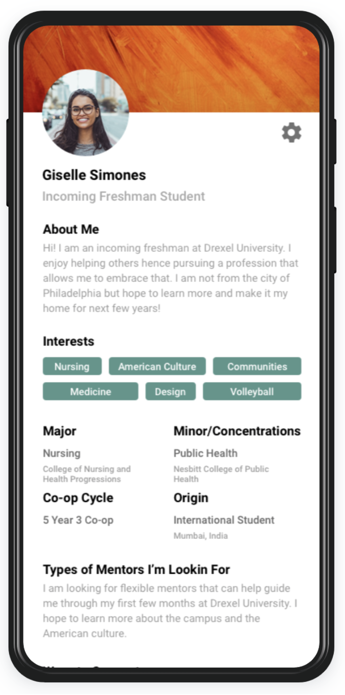
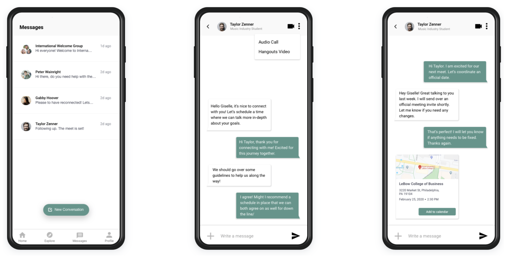

Project Overview
Problem Statement: Your school wants to strengthen the community by encouraging experienced students to connect with new students and help them adjust to campus life. Design an experience that allows mentors and mentees to discover each other. Consider the needs of both mentors and mentees, including how someone may become a mentor and how to connect mentors to mentees.
Context: I used some of my personal experiences working as a student ambassador at Drexel University, where I speak to prospective students and families. From personal experience, I currently work as a student ambassador for Drexel University where I speak to prospective students and their families.
One of the concerns I address the most often is about the transition from high school to college and whether or not the adjustment to college life is difficult. It is usually the job of the universities to assist with resources and support during the incoming students first year on campus since it is an entirely new environment to them away from home and their parents. To note: Drexel University is a co-op school therefore every student is on a varying track and co-op is an integral part of Drexel so I included it within my design.
User Research
Overview of the Problem: Prior to finding solutions for the problem, I started off with delving more into the root causes of it. By breaking down the problem, I discovered that we want to make it easier for experienced students to connect with incoming students in order to help them during the big adjustment period of coming to college, but there are more small-scale concerns that is preventing that connection to be established.
Regardless, mentors play a significant role in many peoples' lives. For instance, young adults who face an opportunity gap but have a mentor at 55% more likely to be enrolled in college and graduate than those who did not and about 22% of college graduates had a college mentor who encouraged their goals and progress throughout their college journey. However, for many people, finding a mentor is one thing but the bigger challenge is finding the right type of mentor for them. Sometimes, mentors do not match up with their mentees' expectations or criteria therefore not providing them with the knowledge or value they seek. The underlying problem revolves around the fact that the match up might not be fitting for either side thus creating a lack for productivity and connections and encourages earlier drop offs from the programs.
During my research process, I discovered that the root causes can be broken up into micro-problems. Here are a list of questions where I took into consideration the pain points of the mentees and mentors:
- How many college students look for mentors/mentees?
- Why do people not find a mentors in college?
- What are some reasons students become mentors?
- How long does it take for first year students to adjust to college?
- What are some ways experienced students can connect with incoming students (e.g. network events, freshmen seminars)?
Ideation
Brainstorm:

Sketches:
After a rapid sketch of what my vision was, I took it onto Sketch and created a couple of iterations of the user flow for a mentee.
 Wireframes:
Hi-Fidelity Mockup
Onboarding Process:
Explore Page:
Mentor Profile:
For the mentor's side of view, their options are similar to a mentees where they can edit their profile but also set availability so that once they accept a request from a mentee a message including times of availability on a week basis can be sent to the mentee. In order for the mentor to view their match requests and accepted requests, they will click the explore page where they have the ability to see mentees nearby but also keep track of the amount of requests. The main concern here was the mentors had to many requests so how were they going to keep a healthy balance in their mentorship lifestyle. One of the main limits that can be set is that mentees are only allowed to send max six requests per week therefore the mentor can easily establish boundaries and guidelines without having to decide who to invest more time into.
Mentee Profile:
The mentee profile is divided up into varying sections including (this feature has a scroll feature if hover over on the left screen)
Messaging:
One of the most important features on this interface is the chat feature as it provides more than one type of interaction available to both the mentor and mentee. Either user can do an in-app audio call or even Google Hangouts if it is part of the agenda schedule. The mentee and mentor can set up official meeting appointments via chat as well for the next time they meet in advance and can add it to their Google Calendar as well if need be. The notification for a new meet up appears on the chat with the location, address, date, and time via Google Maps integration.
For the chat, I wanted to keep it simple and light due to the fact that the focus is giving space for the mentor and mentee to connect, interactive, and be productive. Speaking of productivity, in the future, there could also be integration with Google Keep which could allow either user to take notes while still chatting live with one another since there are a lot of students that are active note takers rather than only listening.
The chat provides ability to have group conversations as well depending because the mentee and/or mentor must be a part of that group in the first place to be a part of that group chat. This would be a fantastic way for the university to have welcome chats and have mentors from diverse disciplines come together and help with the onboarding process for new incoming students to get to know one another as well.